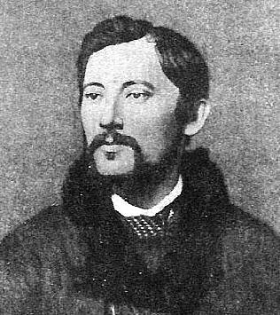

Труды К. Н. Леонтьева
|  | Константин
Николаевич Леонтьев, [13(25).I.1831 -
12(24).XI.1891], религиозный мыслитель,
публицист, представитель
консервативной ветви позднего
славянофильства, один из
предшественников евразийства начала XX в.
Считая главной опасностью для России
западный либерализм, доказывал
необходимость возврата к "византизму":
сохранению принципов церковности,
монархизма, сословной иерархии и т.п.
Охранительное средство от
революционных потрясений видел в союзе
России со странами Востока.
Его творчество проложило торную тропу от ранних славянофилов и Н.Я. Данилевского (1822-1885) к евразийцам начала XX в. Л. Н. Гумилёв считал Константина Николаевича своим учителем евразийства. |
 Биография
К. Н. Леонтьева (6/02/04)
Биография
К. Н. Леонтьева (6/02/04)- Чем
и как либерализм наш вреден? (I,
II)(15/03/04)
- Средний
европеец как идеал и орудие всемирного
разрушения (I, II,
III-IV, V-VI, VII-VIII)
(14/04/04)
- Грамотность
и народность (I, II,
III-IV) (12/05/04)
- Национальная
политика как оружие всемирной революции
(I-II, III-VI, VII-IX)
(31/06/04)
 Византизм
и славянство
(18/07/04)
Византизм
и славянство
(18/07/04)- I. Византизм
древний
- II. Византизм
в России
- III. Что
такое славизм?
- IV. Что
такое славянство? (Продолжение)
- V. Продолжение
о славянах
- VI. Что
такое процесс развития?
- VII. О
государственной форме
- VIII. О
долговечности государств
- IX. О
возрасте европейских государств
- X. Продолжение
того же
- XI. Сравнение
Европы с древними государствами
- XII. Заключение
Материалы любезно предоставлены Проектом "Константин Леонтьев".